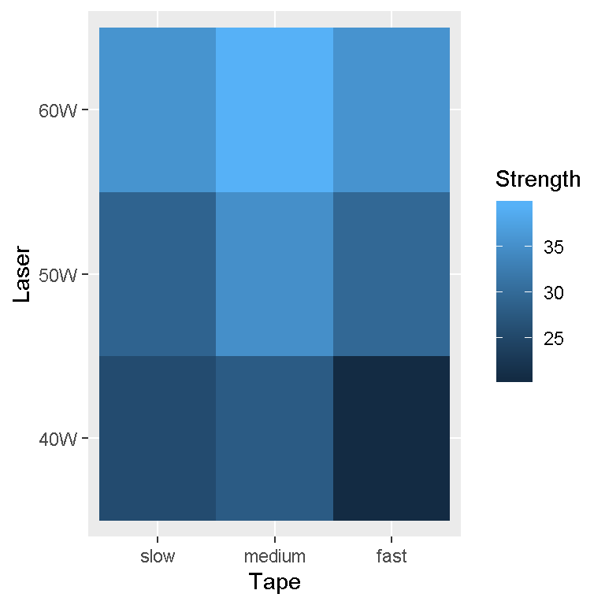

Heatmaps In R & ggplot2
Hi. I have played around with heatmaps in R and the ggplot2 package. Here is what I have worked with.
References
- R Graphics Cookbook by Winston Chang (2012)
- http://www.sthda.com/english/wiki/ggplot2-quick-correlation-matrix-heatmap-r-software-and-data-visualization
- R Documentation for the datasets and ggplot() functions.
- The faraway dataset library and the ggplot2 library in R
Dataset One: Strength Of Thermonplastic Composite Experiment Results
This first dataset is a small dataset with 9 row (observations) and 3 columns (variables). This data is from an experiment to test the strength of a thermoplastic composite. The image below is a screenshot of the R documentation of this dataset.

The ggplot2 and faraway libraries are loaded into R.
# Heatmaps in R:
# References:
# http://www.sthda.com/english/wiki/ggplot2-quick-correlation-matrix-heatmap-r-software-and-data-visualization
# R Graphics Cookbook by Winston Chang (2012)
## First Dataset:
library(faraway); library(ggplot2)
In the faraway package, this data is called composite. I save this data into a variable called compData. I also print out the contents of this table.
compData <- composite
# See the data (not very big):
compData## strength laser tape
## 1 25.66 40W slow
## 2 29.15 50W slow
## 3 35.73 60W slow
## 4 28.00 40W medium
## 5 35.09 50W medium
## 6 39.56 60W medium
## 7 20.65 40W fast
## 8 29.79 50W fast
## 9 35.66 60W fast
The structure of the dataset can be found by using the str() function.
# Structure of the dataset:
str(compData)## 'data.frame': 9 obs. of 3 variables:
## $ strength: num 25.7 29.1 35.7 28 35.1 ...
## $ laser : Factor w/ 3 levels "40W","50W","60W": 1 2 3 1 2 3 1 2 3
## $ tape : Factor w/ 3 levels "slow","medium",..: 1 1 1 2 2 2 3 3 3
The lines of code and output consists of changing the column names (for capitalization) and check the summary of the data. The summary() function gives some key summary statistics such as mean, median, counts for factors and more.
# Fix column names:
colnames(compData) <- c("Strength", "Laser", "Tape")
# Summary of the dataset:
summary(compData)## Strength Laser Tape
## Min. :20.65 40W:3 slow :3
## 1st Qu.:28.00 50W:3 medium:3
## Median :29.79 60W:3 fast :3
## Mean :31.03
## 3rd Qu.:35.66
## Max. :39.56
A Basic Heatmap Plot
Creating a basic heatmap plot does not require much code. In the aes() part of ggplot(), I have x = Tape, y = Laser and the fill colours associated with Strength. The add-on function geom_tile() is needed to obtain the tiles/squares in the plot.
# Basic Heatmap Plot:
heatmap1 <- ggplot(compData, aes(x = Tape, y = Laser, fill = Strength)) +
geom_tile()
heatmap1
A Heatmap Plot With Labels And More Features
The heatmap plot still needs some adjustments. The labels could be fixed and a title needs to be added. The next lines of code will produce a more detailed heatmap plot.
# Heatmap Plot (Fixed With labels):
heatmap1 + scale_x_discrete(labels = c("Slow (6.42 m/s)", "Medium (13 m/s)", "Fast (27 m/s)")) +
scale_fill_gradient2(midpoint = median(compData$Strength), mid="grey70",
limits = c(min(compData$Strength), max(compData$Strength))) +
labs(x = "\n Tape Speed", y = "Laser Power\n",
title = "Strength Of Thermoplastic Composite \n Experiment Results \n",
fill = "Composite \n Strength \n") +
theme(plot.title = element_text(hjust = 0.5),
axis.title.x = element_text(face="bold", colour="darkgreen", size = 12),
axis.title.y = element_text(face="bold", colour="darkgreen", size = 12),
legend.title = element_text(face="bold", colour="brown", size = 10)) +
geom_text(aes(x = Tape, y = Laser, label = Strength), color = "black",
fontface = "bold", size = 5)
Some Notes
scale_x_discrete()with the labels argument can give labels such as Slow, Medium and Fastscale_fill_gradient2()allows for customization of the numbers in the scale legendlabs()are for the x-axis, y-axis labels, the legend title and the title- The
theme()function allows for the visual customization of labels and titles. geom_text()allows for labels in each tile
Dataset Two: Treatment and Block Effects On Egg Production
This second dataset is about treatment and block effects on egg production. The full details can be found in the screenshot image below.

I save the eggprod data into a variable called eggprod_data. Then I take a look at the data, its data structure and some summary statistics.
## Second Dataset:
eggprod_data <- eggprod
# Look at the data:
eggprod_data## treat block eggs
## 1 O 1 330
## 2 O 2 288
## 3 O 3 295
## 4 O 4 313
## 5 E 1 372
## 6 E 2 340
## 7 E 3 343
## 8 E 4 341
## 9 F 1 359
## 10 F 2 337
## 11 F 3 373
## 12 F 4 302# Data structure:
str(eggprod_data)## 'data.frame': 12 obs. of 3 variables:
## $ treat: Factor w/ 3 levels "E","F","O": 3 3 3 3 1 1 1 1 2 2 ...
## $ block: Factor w/ 4 levels "1","2","3","4": 1 2 3 4 1 2 3 4 1 2 ...
## $ eggs : int 330 288 295 313 372 340 343 341 359 337 ...# Summary of the data:
summary(eggprod_data)## treat block eggs
## E:4 1:3 Min. :288.0
## F:4 2:3 1st Qu.:310.2
## O:4 3:3 Median :338.5
## 4:3 Mean :332.8
## 3rd Qu.:347.0
## Max. :373.0
The column names can be renamed using colnames().
# Rename column names:
colnames(eggprod_data) <- c("Treatment", "Block", "Eggs")
A Basic Heatmap Plot
Here is a basic heatmap plot which describes this data.
# Basic Heatmap Plot:
heatmap2 <- ggplot(eggprod_data, aes(x = Treatment, y = Block, fill = Eggs)) +
geom_tile()
heatmap2
Like in the first heatmap in the first dataset, more can be done in terms of labelling and visual details.
An Updated Heatplot
Here is the code and output for this updated heatplot with more labels and titles.
# Updated Heatmap Plot:
heatmap2 + scale_x_discrete(labels = c("E", "F", "O")) +
scale_fill_gradient2(midpoint = median(eggprod_data$Eggs), mid ="grey70",
limits = c(min(eggprod_data$Eggs), max(eggprod_data$Eggs))) +
labs(x = "\n Treatment", y = "Block \n", fill = "Number Of Eggs \n",
title = "Treatment And Block Effects \n On Egg Production \n") +
theme(plot.title = element_text(hjust = 0.5, colour = "blue"),
axis.title.x = element_text(face="bold", colour="darkgreen", size = 12),
axis.title.y = element_text(face="bold", colour="darkgreen", size = 12),
legend.title = element_text(face="bold", colour="brown", size = 10)) +
geom_text(aes(x = Treatment, y = Block, label = Eggs), color = "black",
fontface = "bold", size = 5)